iPhone Duo 四種姿勢
P10 #10 preview gate，第 6 版。全部係真 app（v1.37.3，e2e 假資料）嘅截圖，尺寸、圓角同鏡頭位置係用 headless browser 跑 Progressier simulator 讀返嚟。 橙色虛線 = 摺位。確認之後先寫 code。
唔影響現有裝置
硬性要求- 所有 Duo／HomeView 改動只寫喺新增嘅 media query 入面，條件鎖死喺呢幾個 viewport 範圍；現有規則一行都唔改。
- 更正：上一版講「橫版斷點由 640px 降到 600px」會影響其他 600–639px 闊嘅裝置，唔再咁做。改為另加一條只啱 Duo 外屏打橫／Seated（闊 600–639px、高 ≤ 450px）嘅規則，640px 斷點保持原樣。
- 四邊 24px 邊框、摺位對齊、3 欄主頁同樣只喺 Duo 範圍生效。
- 驗收：現有 e2e viewport（手機直 390 × 844、320 × 568，手機橫 844 × 390，iPad 橫 1180 × 820，電腦 1300 × 800）全部照跑；另外喺改動前後各影一次呢批 viewport，逐張比對要完全一樣。平板直版而家冇 e2e viewport，會加 820 × 1180。
共通：四邊邊框
所有姿勢- 量度結果：而家邊距大致 16px，但主頁播放卡底、mini player 底得 8px。Duo 螢幕圓角係 68px，方角內容要離邊 ≥ 20px 先唔會俾圓角裁走。
- 建議：Duo 四邊統一 24px（現有 16px 再加 8px），播放卡底同 mini player 底補返一樣闊。播放卡嘅關閉掣喺圓角入面睇得晒。
- 普通手機、iPad 唔變。
- 黑色圓點 = 外屏鏡頭（30px）。Simulator 冇提供安全區數值，所以鏡頭會遮住內容；真機點處理見 Q8。
闔上・直
426 × 612- 版面唔改；加四邊邊框。
- 「最近收聽」高度跟內容，最高 200px，而且唔超過分頁區 40%；收藏區一定高過佢。只限 Duo 闔上・直，普通手機照舊固定 200px。
主頁
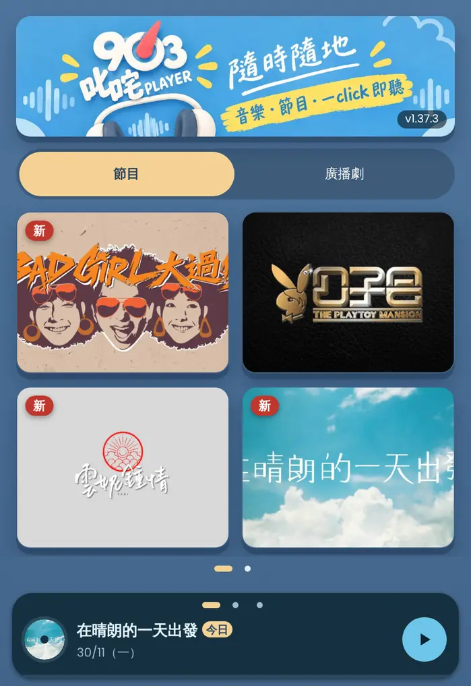
我的收藏
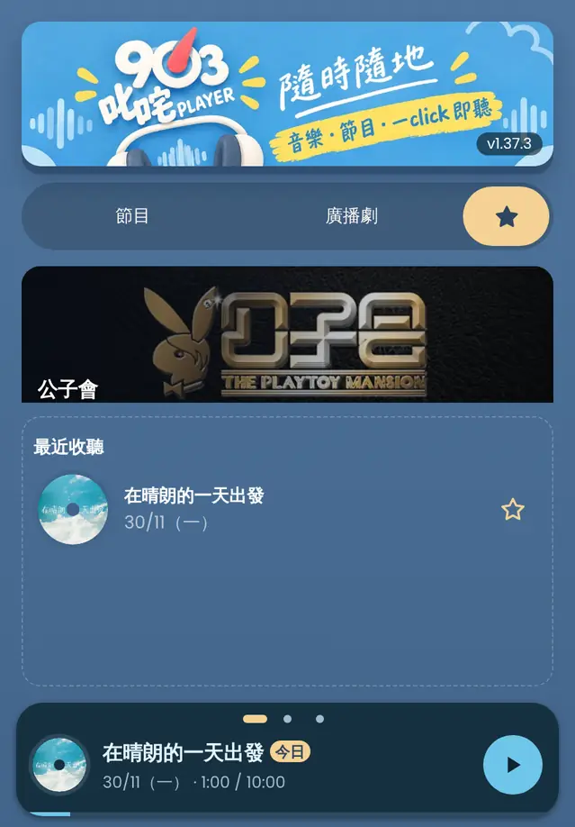
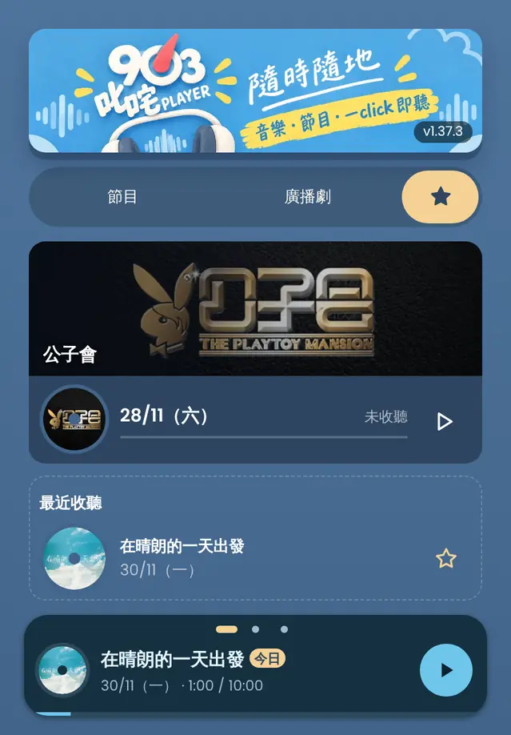
闔上・橫
612 × 426- 現狀：612px 未夠橫版斷點（640px），跌入直版。建議：另加一條只啱呢個尺寸嘅規則，入手機打橫版面。
- 今日節目卡貼右邊（你指出嗰個問題）：左欄清單佔 54%，612px 闊時右欄放唔落張卡。建議呢個闊度左欄改 46%，張卡喺右欄置中。
- 今日節目清單頭兩行嘅播放掣縮細咗，係臨時 CSS 嘅副作用；正式版每個掣保持 44px。
主頁

今日節目

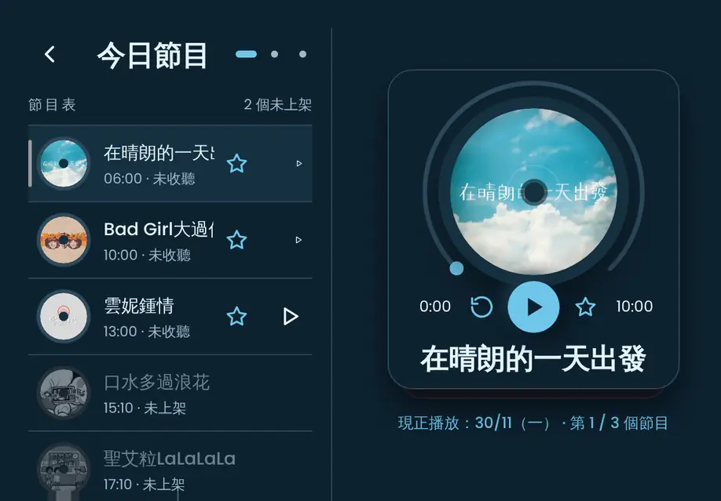
節目頁
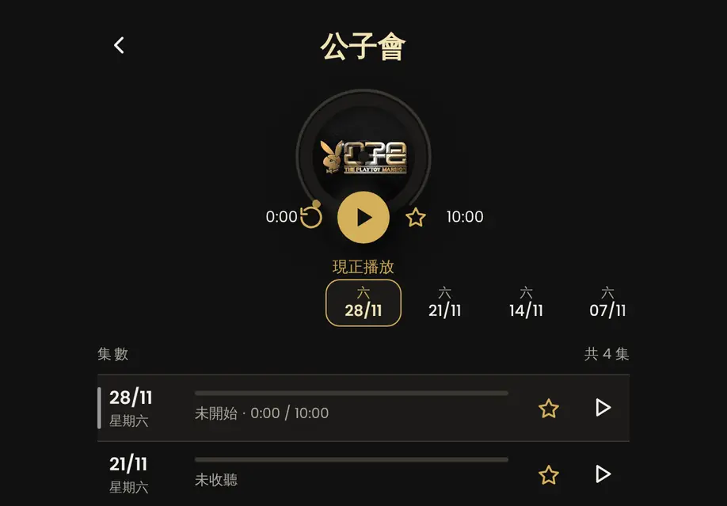
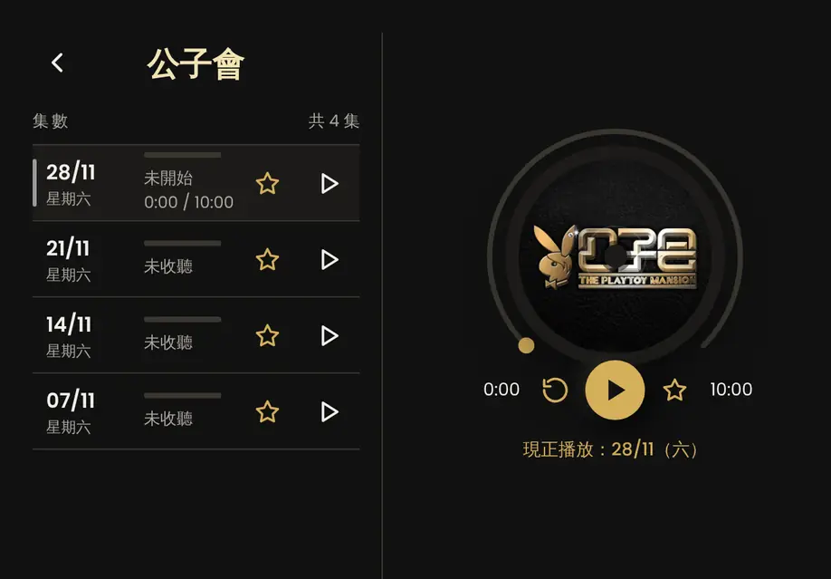
廣播劇頁
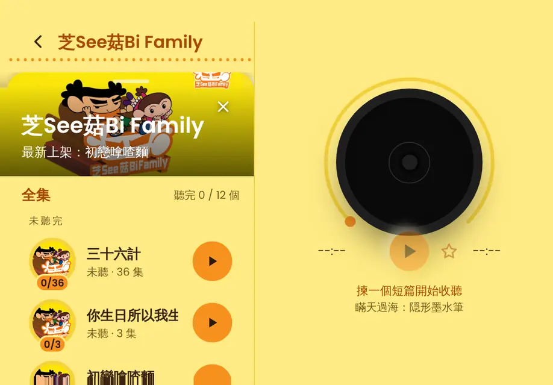
Seated／Standing
612 × 438／612 × 426- Standing（帳篷）用外屏打橫，612 × 426，同「闔上・橫」完全一樣，唔使另外做。
- Seated（半開放枱）網頁只佔上半屏，612 × 438；下半屏係系統控制區，網頁用唔到。同一條 Duo 規則覆蓋埋，上半屏入手機打橫版面。
- 上面兩隻角係 68px 圓角，下面貼住摺位係直角。
Seated 上半屏
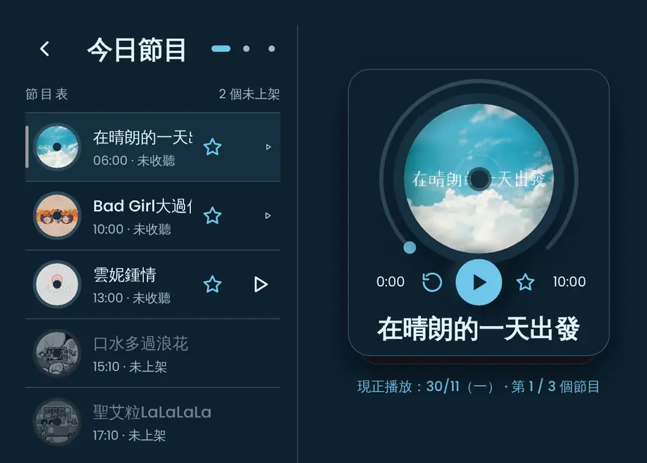
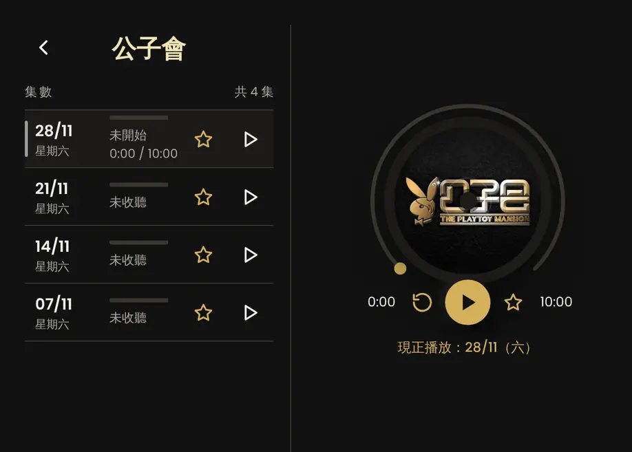
打開・橫
876 × 612- 已定：方案 A，兩欄各佔一半，對齊摺位（橙色虛線）。
- 主頁（新）：改用同 HomeView 一樣嘅版面：左半係固定闊版橫額 + 分類掣 + 疊卡 scroller，右半係播放卡。左半係靜態砌圖，右半係真 app 截圖。
- 加四邊邊框；主頁播放卡嘅關閉掣唔再俾圓角遮住。
主頁
v1.37.3
節目廣播劇
新星期一至五
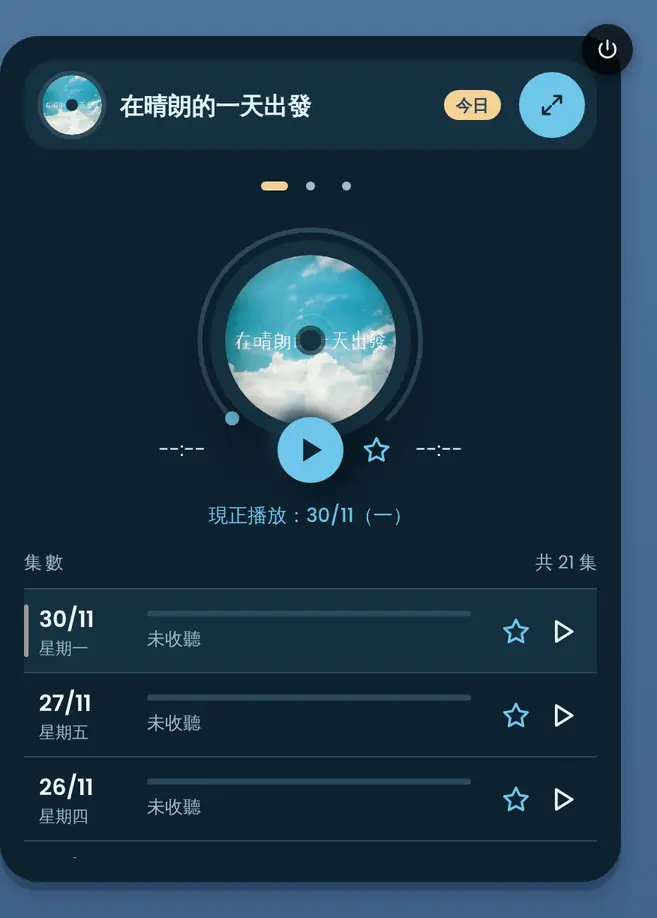
今日節目


節目頁


廣播劇頁


打開・直
612 × 876- 主頁：全闊 3 欄 + 四邊邊框，一頁放晒。圖入面漏咗最尾嘅「今日節目」格，係臨時 hack 嘅副作用，正式版有 9 格。
- 今日節目（方案 A）：播放卡收窄到近正方形、置中，指示點喺卡下面，全部喺摺位以上。
- 節目頁、廣播劇頁（方案 B）：日子條／短篇選擇喺上半屏右邊直排，唱片大啲。直排掣係複製現有掣砌出嚟，間距正式版再調。
- 全集表／資料表：最高只到摺位。
主頁


內頁

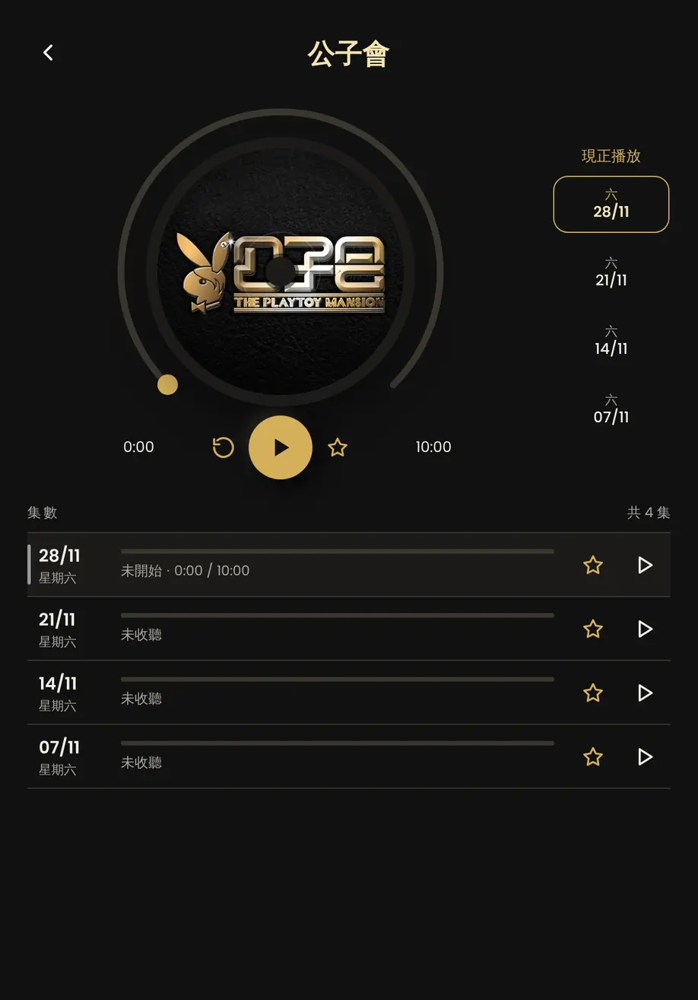
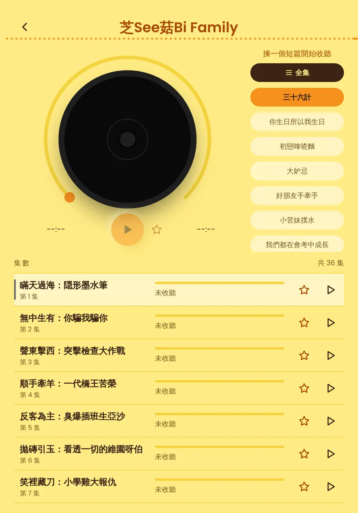
待確認
| # | 問題 | 我嘅建議 |
|---|---|---|
| Q12 | 打開・橫主頁用「左橫額 + 疊卡 scroller、右播放卡」？ | 用。同 HomeView 主頁同一套版面，兩部機一齊做。 |
已定
| # | 項目 | 決定 |
|---|---|---|
| Q1 | 尺寸 | 用 simulator 實測值 |
| Q2 | 闔上・直 3 欄 | 唔做 |
| Q3 | 打開・橫 | 方案 A，各佔一半 |
| Q4 | 打開・直主頁 | 3 欄 + 四邊邊框 |
| Q5 | Seated／Standing | 做；冇新版面 |
| Q6 | HomeView square |
同一條 lane 連住做；preview 喺 _mockups_/home-view
|
| Q7 | 提早喺 1.x 出 | 唔使，全部留 v2.0.0 |
| Q8 | 外屏鏡頭 | 靠安全區，真機有報就自動避開 |
| Q9 | 四邊邊框 | 24px |
| Q10 | 闔上・橫／Seated 左欄 | 46% |
| Q11 | 打開・直內頁 | 節目頁、廣播劇頁用 B；今日節目用 A，卡近正方形 |
| — | 「最近收聽」改矮 | 只限 Duo 闔上・直；普通手機照舊 |
- 「建議」圖係臨時改 token / CSS 影出嚟，唔係最終 code；細節（例如清單行掣大細）以正式版為準。
- 冇真機：圓角、鏡頭、摺位位置全部跟 Progressier simulator。